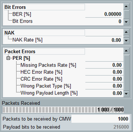
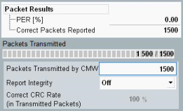
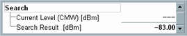

Measurement Results
All results of the BER and PER measurements are shown in the left part of the RX quality view.

BER results (BR/EDR)
The following results apply to BR/EDR RX measurements.
- "BER": bit error rate, percentage of received erroneous data bits.
- "Bit Errors": sum of received erroneous data bits.
- "NAK Rate": percentage of packets transmitted by the R&S CMW, which were not acknowledged by the EUT positively.
- "PER": packet error rate, percentage of bad packets received. This value is equal to the sum of the percentages of the individual packet error types.
- "Missing Packets Rate": Difference between the number of packets sent and the number of packets received from the EUT as percentage.
- "HEC Error Rate": header error check, percentage of received packets with the bit errors in the header.
- "CRC Error Rate": cyclic redundancy check, percentage of received packets with the bit errors in the payload.
- "Wrong Packet Type": percentage of received packets of a different type to that originally transmitted ones by the R&S CMW, including poll and null packets.
- "Wrong Payload Length": percentage of received packets containing the different payload length to that originally transmitted ones by the R&S CMW.
- "Packets Received": number of test packets with the correct CRC and the correct packet header received by the EUT, i.e. packets that are not considered for the BER measurement. Received bad packets (packets, that the EUT is unable to send back and the ones that are sent back in error) do not affect this packet counter.
After the start of a single shot measurement, this value indicates the number of received packets and the total number of packets to be measured per single shot. Two equal numbers indicate that the first shot is complete and the statistical depth has been reached.
A measurement in continuous mode still continues and calculates results from the previous statistical cycle (e.g. the previous 100 packets). - "Packets to be received by CMW": Number of data packets to be measured per measurement cycle, see "Packets".
- "Payload bits to be received": Payload bits is a value derived from the configured number of data packets to be measured depending on the selected packet type and payload length.

PER results (LE)
The results for LE RX measurements differ. The following results apply to LE RX measurements.
- "PER": packet error rate, percentage of corrupted data packets that the EUT received.
- "Correct Packets Reported": total number of packets with a passed CRC check received by the EUT.
- "Packets Transmitted": number of test packets transmitted by the R&S CMW.
After the start of a single shot measurement, this value indicates the number of transmitted packets and the total number of packets to be measured per single shot. Two equal numbers indicate that the first shot is complete and the statistical depth has been reached.
A measurement in continuous mode still continues and calculates results from the previous statistical cycle (e.g. the previous 100 packets). - "Packets Transmitted by CMW": Total number of test packets to be transmitted during the RX measurement.
- "Report Integrity": Report integrity adjusts the ratio of the test packets with correct CRC transmitted by the R&S CMW.
- "Correct CRC Rate in Transmitted Packets": Ratio of the test packets with correct CRC, generated by the R&S CMW. If the report integrity is ON, the ratio is set to 50%. If the report integrity is OFF, all packets contain correct CRC.
Search measurements provide in addition to the results of BER/PER measurements also search-specific results. Search-specific results are situated in the middle of the left pane of the "BER Search" view.

Results of search measurements
- "Current Level (CMW)": see "TX Level (CMW)"
- "Search Result": the last TX sweep level of the R&S CMW for which the measured BER/PER value is below the specified BER search / PER search limit, see "Limits"